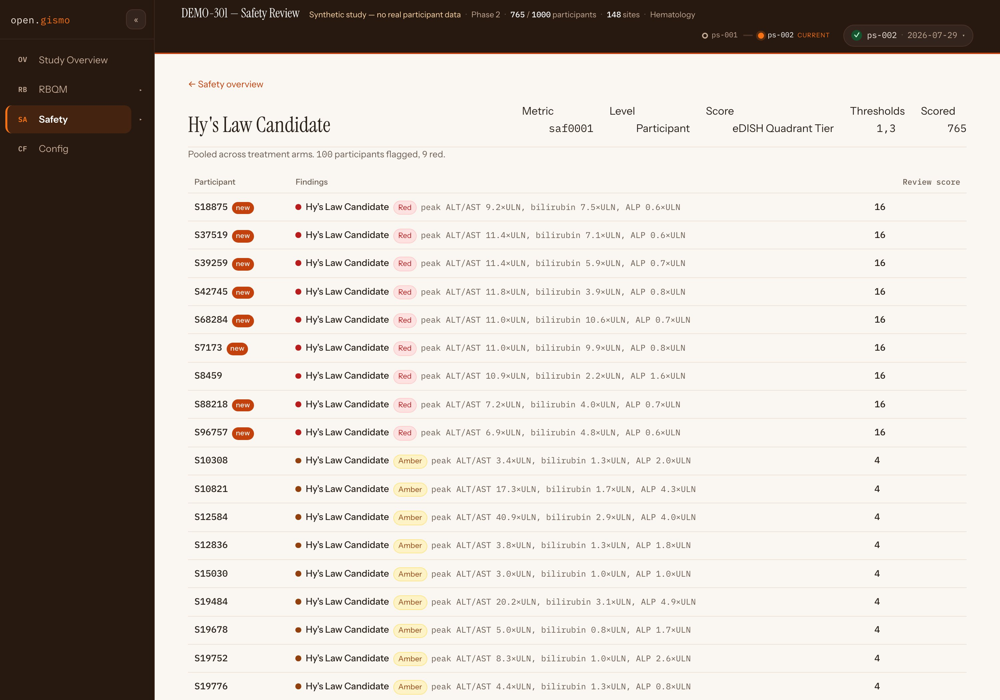
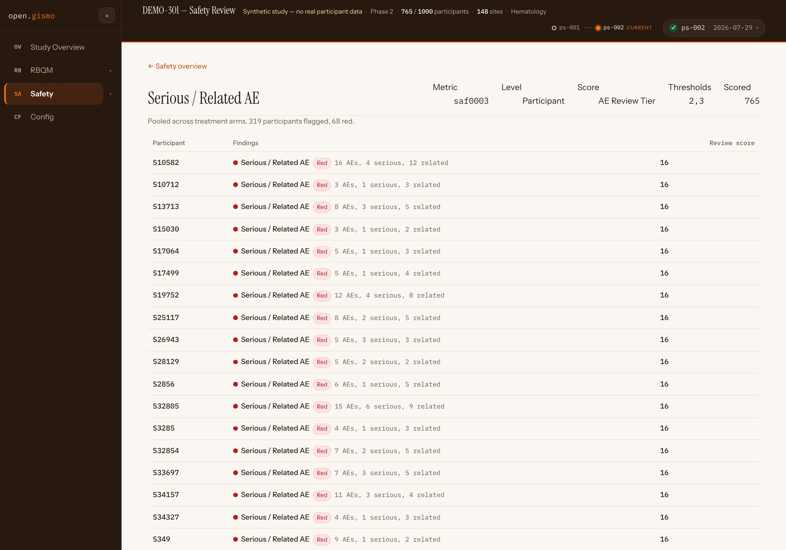
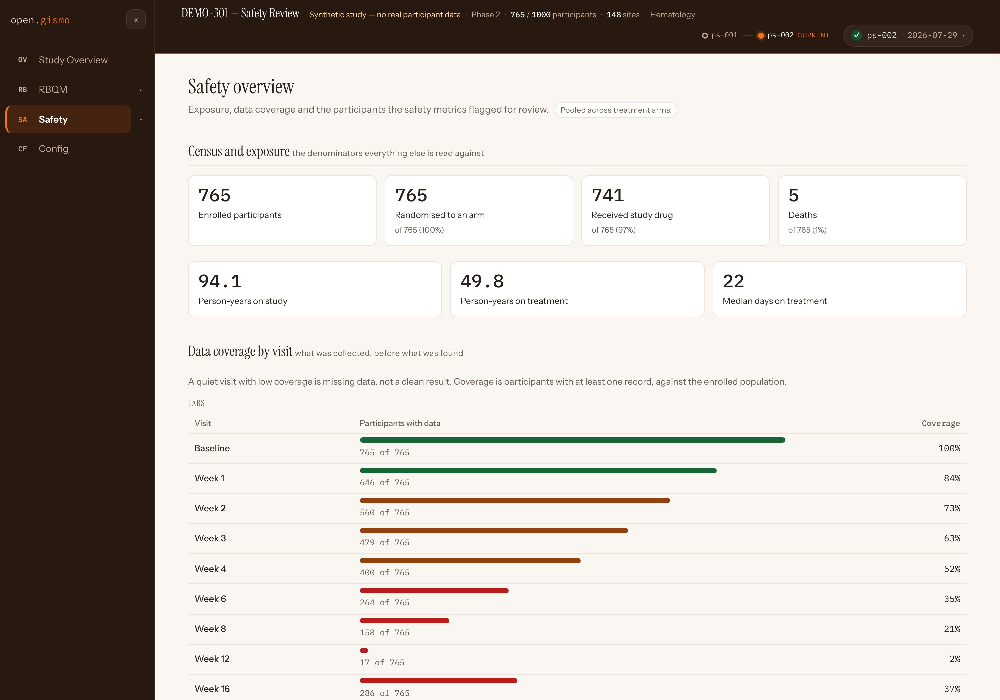

gsm.safety release review 2026-08-15
gsm.safety could draw the eDISH chart but could not tell you how many participants were in the Hy's Law quadrant. v1.1.0 adds the metrics phase that answers that — three participant-level safety metrics, each tuned against measured counts before being treated as real — plus SafetyCensus(), the denominators a safety overview leads with. Every capture below is the release's code running live inside the DEMO-301 study site.
3 participant-level metrics — a new 2_metrics phase 1 286 tests pass · R CMD check clean runs live in DEMO-301 → Safety promotes dev → main via gs#52
Three participant-level metrics, cut down from a longer candidate list by @jwildfire: saf0001 Hy's Law candidate, saf0002 QTcF prolongation, saf0003 serious / related AE. Each scores one row per participant with an ordinal tier through the standard gsm contract — Analyze_Identity() + Flag(), following gsm.kri's pat0015 precedent — so subject rows land in Reporting_Results beside site and country rows and nothing downstream changes. The liver and QT cut-points come from the vendored data contracts of the charts they correspond to, so the metric and the chart cannot drift apart.

1 2 3Why it matters
A chart shows the quadrant; a metric gives review a workable queue with a defensible tier behind every name. Because the cut-points are read from the same vendored contracts the charts use, "the chart says quadrant, the metric says tier" can never silently disagree.
Try it
Open saf0001 on DEMO-301hub#138's Data Requirement set a binding gate: actual flagged-participant counts on demo data are reported before any metric is treated as real. The counts below are the release's own evidence — and two of them changed the design.
| Metric | Scored | Green | Amber | Red |
|---|---|---|---|---|
saf0001 Hy's Law candidate | 765 | 665 | 91 | 9 |
saf0002 QTcF prolongation | 400 | 308 | 81 | 11 |
saf0003 serious / related AE | 765 | 446 | 251 | 68 |
Measured on DEMO-301's mapped output, 765 enrolled participants. Three findings reading the code would not have surfaced: the QTcF metric is carried by the change criterion (exactly one participant exceeds 500 ms absolute; ten more reach red only through ≥ 60 ms change from baseline); only 400 of 765 participants have a post-baseline QTcF at all — a coverage finding, and why the overview leads with coverage; and the AE metric as first written flagged 560 of 765 participants, so its amber threshold moved up a tier — "serious or related" alone is a property of being in a trial, not a review signal.

The retuned queue. After the gate, saf0003 flags 319 of 765 — 251 amber, 68 red — a queue someone can actually work, with amber starting at a serious event and red at a serious, related event at or above the grade cut. The discontinuation leg has no source column in this demo's AE domain; Input_SafetyAE() records ActionColumnPresent = FALSE on every row rather than scoring as though nobody discontinued — the gap is stated in the output.
Why it matters
Safety metrics that ship untested against real distributions become dashboards nobody trusts. The gate is the release's discipline: every threshold in this package has a measured consequence attached, and the one figure that did not reproduce (the design artifact's 22-participant quadrant count) is corrected in the record — 31 with both axes elevated, 22 cholestatic exclusions among them, 9 surviving.
Try it
Open saf0003 on DEMO-301SafetyCensus() reduces the mapped domains to what a safety overview leads with: enrollment, randomisation, exposure, person-years, deaths — and data coverage per visit, the figure that decides whether a quiet visit is reassuring or empty.

The census as DEMO-301 renders it. Week 12 labs cover 17 of 765 participants (2%) — the display says so before anyone reads "no week-12 findings" as good news. This is the same coverage fact that explains saf0002's 400-of-765 scored count above.
Why it matters
Every rate in a safety review is a numerator over one of these denominators. Computing them once, in the package, from the mapped domains — instead of ad hoc in each display — is what lets an overview lead with them consistently.
Try it
Open the Safety overviewThe report workflows move from inst/workflow/3_reports/ to inst/workflow/4_modules/ — the standard gsm phase directory for meta.Type: Report workflows, the one gsm.kri already uses — and the new 2_metrics/ phase slots in where the ecosystem expects metric generation. 3_reports was the one phase directory in the portfolio that deviated, and it sorted beside gsm.reporting's unrelated 3_reporting.
inst/workflow/
├── 1_mappings/ # unchanged
├── 2_metrics/ # NEW — metric generation, ahead of module assembly
│ ├── saf0001.yaml # Hy's Law candidate
│ ├── saf0002.yaml # QTcF prolongation
│ └── saf0003.yaml # serious / related AE
└── 4_modules/ # was 3_reports/ — the gsm standard for Report workflows
├── ae_explorer.yaml … safety_shift_plot.yaml # 9 modules, unchanged content
One breaking path. Any pipeline that globbed inst/workflow/3_reports/ updates its path — demo-301's did, in the same arc. Workflow content is unchanged.
Why it matters
The gsm pipeline's phases are a contract (1_mappings → 2_metrics → 3_reporting → 4_modules), and open.gismo's runner discovers workflows by these directories. Conforming means a study can point one runner at gsm.kri and gsm.safety alike — which is exactly how the DEMO-301 site above was built.
Try it
Browse inst/workflow on dev2_metrics/saf0001.yaml — the full Input → Flag chain in YAML.workflows: 1_mappings, 2_metrics, 3_reporting, 4_modules.Input_HysLaw(), Input_QtProlongation(), Input_SafetyAE(), SafetyCensus() and metric utilities, each roxygen-documented.R CMD check clean.Where this fits
This page is the review surface for RC gs#52 (dev → main). gsm.safety is a clinical repo: nothing reaches main without your review. The release notes live in the RC PR's body and in NEWS.md, and publish on the v1.1.0 tag when it merges — on your approval, via the attested lane, and not before.
The rest of the candidate